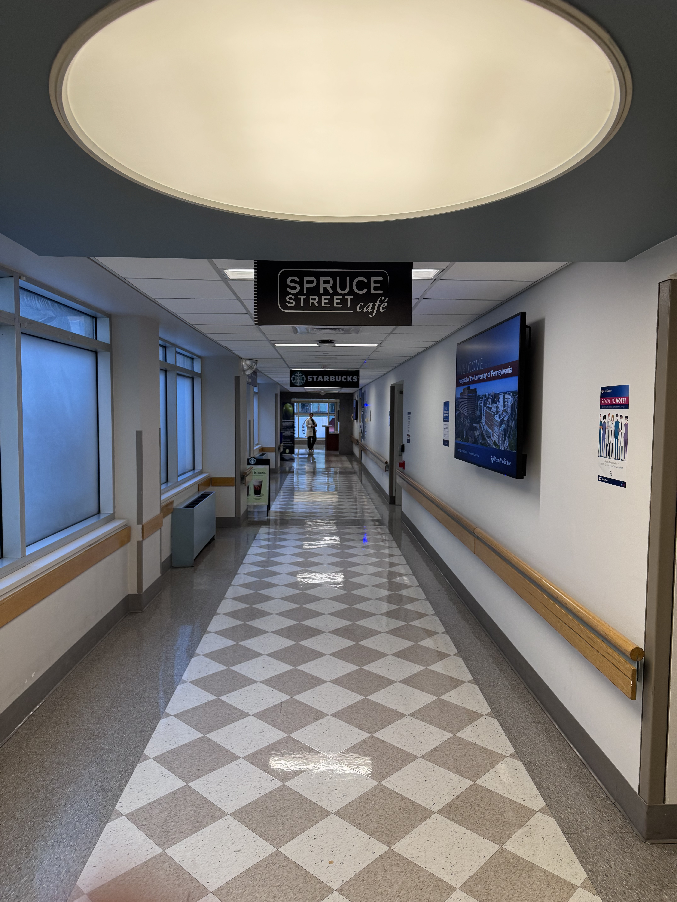
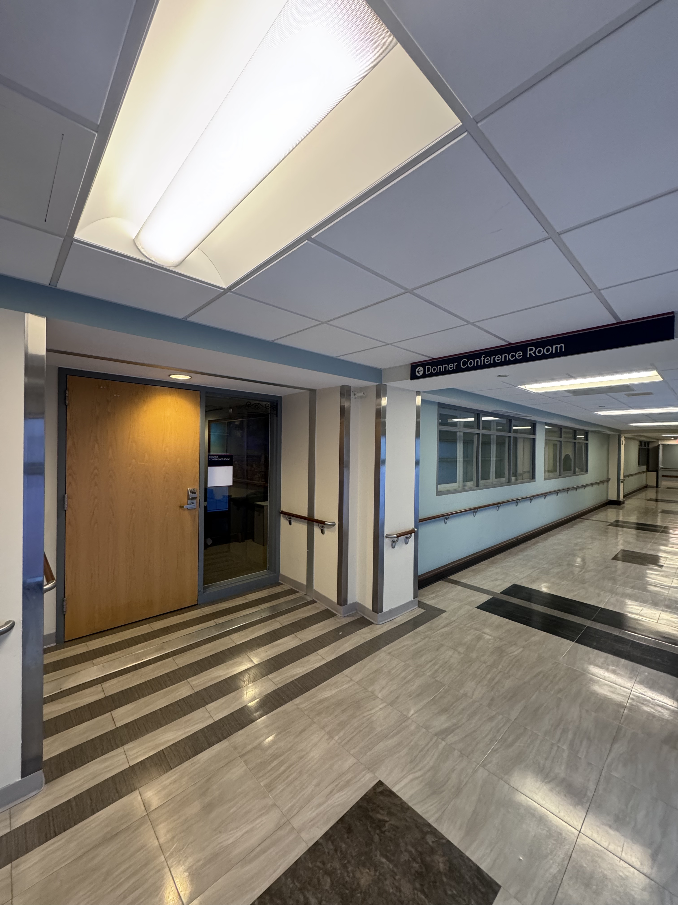
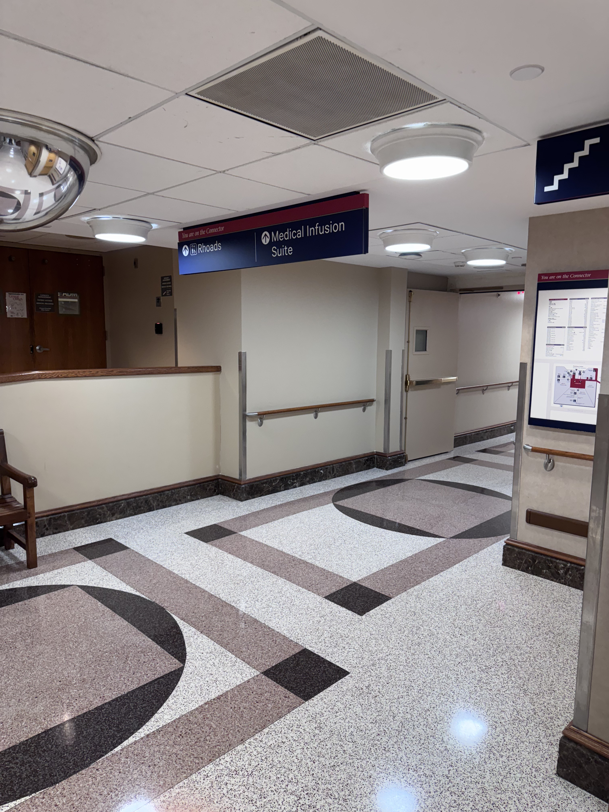
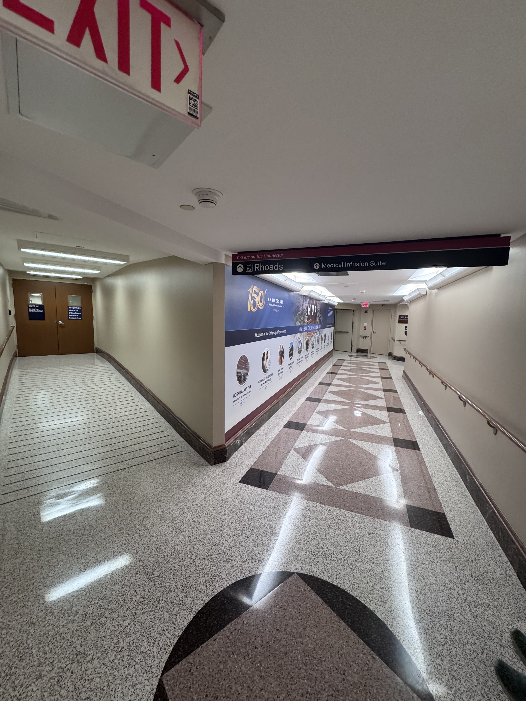

To get to the Donner 2 conference room, the easiest way is to find the cafeteria/Starbucks on the second floor of the old hospital. If you are facing the cafeteria from the hallway and look left, you should see the following view:
Head down this hallway and then turn left just after the stairwell. As you turn left, you should see this view:

Head down this hallway until you see the sign that says Donner Conference Room. You have arrived!
If you are having trouble finding the cafeteria, the easiest way is to ask someone. However, here are instructions for how to find it yourself.
From the main entrance of the old hospital, go up the escalators:

If you continue directly forward from the escalators, you should see the following view:

If you continue forward towards the Rhoads building (passing the sign that says Silverstein elevator and instead going towards the next sign that says Rhoads), you should see the following view:
Continue down the hallway into Rhoads. You will see a fork in the road. Stay right at this fork:
At the end of the hallway seen in the picture above, if you turn slightly to your left, you should see the following view:

Continue down this hallway. At some point, you will see a sign that says Stairs to Cafeteria. Go up these stairs and then follow signs to get to the cafeteria.

Note that you will pass by Donner 2 Conference Room once you're on the second floor on the way to the cafeteria (there will be a sign that says Donner Conference Room).
Made with ☢️ and ❤️
by your HTBAR organizers,
John Walsh, Harsha Voleti, Ianto Xi, Vineeth Gangaram.